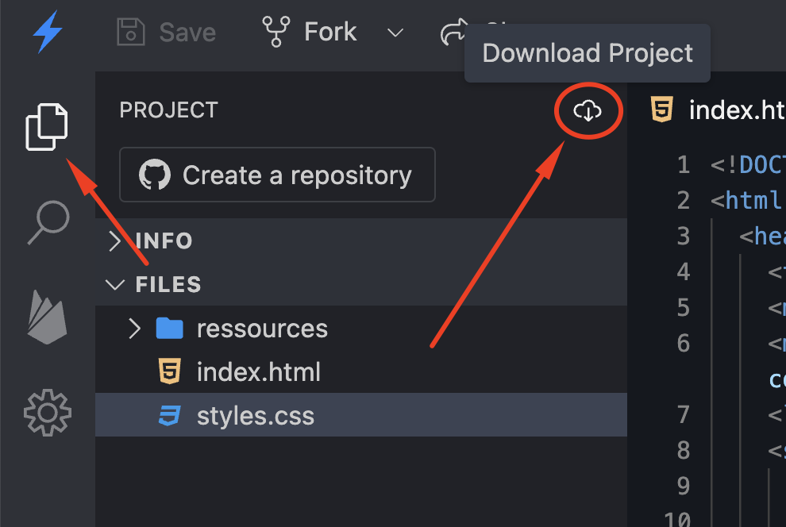
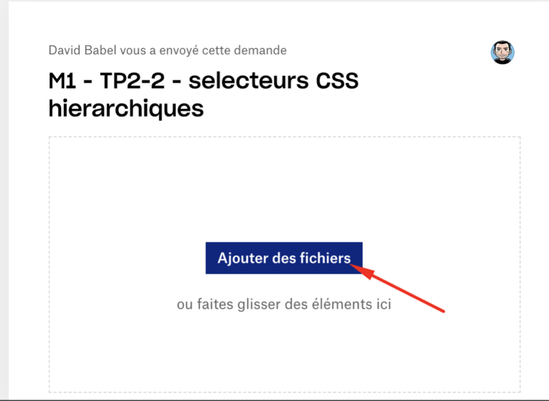

Durée: 2h30+
Cours et TP + corrigés autorisés :
https://davidbabel.github.io/
Internet autorisé, documentation etc.
Réseaux sociaux et chats
interdits
Le lien du
Le TP doit être déposé dans la dropbox disponible sur la page précédente.
Vous pouvez le télécharger :


Merci d'utiliser votre adresse d'étudiant (ou une adresse qui contient votre nom)
N'hésitez pas à poser des questions, je ne vous donnerez pas la réponse mais je vous direz vos erreurs.
Il est fortement recommandé de lire cet énnoncé et les astuces intégralement avant de vous lancer
- Le code HTML ne doit pas être modifié, vous devez uniquement le décommenter au fur à mesure de votre avancement.
- Votre code CSS doit être le plus optimisé et factorisé possible (comprendre qu'il faut écrire le moins possible de
fois la même chose), regrouppez donc les valeurs communes dans une seule et meme règle.
- Vous ne devez utiliser que les selecteurs vus en cours
Attention : Si vous faites une erreur dans votre CSS, toute la suite du code ne seras pas interprétée
1 - Reproduire l'android tel qu'apparait le modèle quand vous survolez le bouton "Tester son Android", le votre doit être
vert:
#a5ca39.
Inspirez vous de ce modèle pour la taille des éléments et des arrondis. Toutes les valeurs sont des multiples de 5 ou
de 10 (sauf les oreilles) et sont exprimés en pixels.
Il est recommandé de construire d'abord la tête, puis le corps, et de placer le corps correctement (voir astuces 2 et
3).
Vous pourrez ensuite placer un à un les éléments restants plus facilement.
astuce 1: utiliser la propriété CSS border: 1px solid red; pour visualiser plus facilement la forme d'un objet
pendant sa construction (enlevez la ensuite quand vous avez fini).
Astuce 2: La tête est un cercle entier, le corps remonte dans la tête en utilisant une valeur négative de margin,
masquant ainsi une partie de la tête.
astuce 3: Vous devez utiliser une bordure blanche de 10px pour le corps afin de marquer la séparation avec la
tête.
astuce 4: Révisez bien les positions absolute et relative.
Mis à part la tête et le corps, le reste des éléments est positionné en position absolue.
Si vous oubliez de bien définir ces valeurs, nous ne pourrez pas finir le TP.
astuce 5: Les oreilles ont une inclinaison de 25 degrès. Seules les oreilles auront des valeurs qui ne seront pas des multiples de 5 ou 10.
astuce 6: Utiliser les boutons "Tester son android" et "Voir les notes" pour afficher des aides visuelles.
2 - Changer la couleur de l'android pour que lors de son survol la totalité de son corps devienne plus foncé avec ce vert: #96bb2a (attention aux règles de priorités).
3 - Lors du survol de la tête, l'android pivote cette ci de 10 degrès sur la droite.
4 - Lors du clic sur le corps de l'android, celui ci écarte les DEUX bras de 25 degrès.
astuce 7: Pour le mouvement des bras, renseignez vous sur les valeurs textes de la propriété CSS "transform origin".
Le StackBlitz du TP est disponible sur la page précédente.
Bon courage